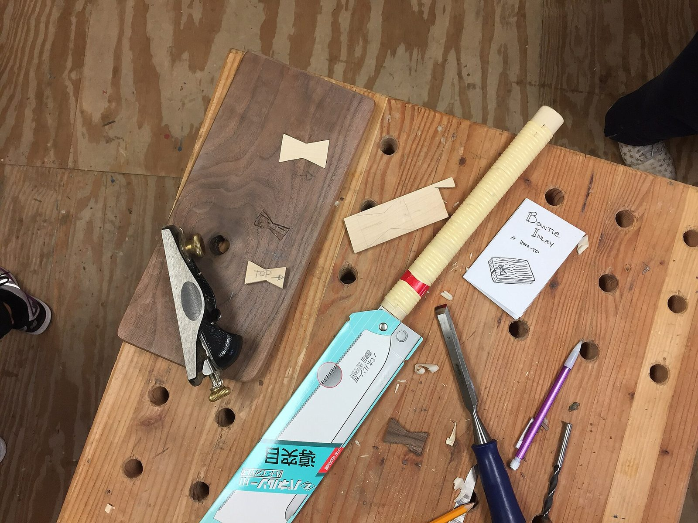

Anglais · A Day in London
Une journée à Londres pour travailler la langue et la culture.
Voir le supportAnnonce Facebook
Section
Collections Anglais et Lettres pour le CAP et le Bac professionnel.
Une journée à Londres pour travailler la langue et la culture.
Voir le supportAnnonce FacebookSe déplacer à Londres : transports et langage utile.
Voir le supportAnnonce FacebookBoîte à outils d'examen pour le CAP Coiffure (A2).
Voir le supportAnnonce FacebookBoîte à outils d'examen A2, My Working Day, pour plusieurs métiers de CAP (lycée professionnel et CFA) et de CAPA (lycée agricole).
Voir le supportParcours anglais Bac pro autour des quatre compétences.
Voir le supportAnnonce FacebookSupports pour le Bac pro à distance en anglais et en français.
Voir le supportAnnonce FacebookImmobilier new-yorkais : séquence en cinq séances.
Voir le supportAnnonce FacebookPVT, budget et emploi : partir en Australie, huit leçons de B1 calibrées sur 52 minutes (Bac pro / CFA).
Voir le supportAnnonce FacebookAnglais professionnel du CAP A2 au Bac pro B1 à B2.
Voir le supportAnglais du commerce et de la vente.
Voir le supportAnnonce FacebookAnglais professionnel en cuisine.
Voir le supportAnnonce FacebookVendre des produits locaux à la foire (B1).
Voir le supportAnnonce FacebookTravailler l'oral en anglais Bac pro.
Voir le supportAnnonce FacebookLes ressources de français réunies par examen : brevet (DNB), CAP, bac professionnel, bac de français à l’écrit et à l’oral.
Voir le supportJean Teulé en Terminale Bac pro.
Voir le supportAnnonce FacebookLes circuits de l'information en Seconde Bac pro.
Voir le supportAnnonce FacebookProjet chef-d'œuvre, aussi adaptable en SEGPA 4e à 3e.
Voir le supportAnnonce Facebook